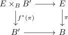

naturality of the wu-class
Proposition
Let

be a pullback diagram, where the vertical morphisms are spherical fibrations.
Then for the \(n\)-th wu class we get
\begin{align*}
f^*(w_n(\pi))) = w_n(f^*(\pi))
\end{align*}
Proof
note that $f$ induces a map
\begin{align*}
\mathrm{Th}(f): \mathrm{Th}(f^*(\pi)) \rightarrow \mathrm{Th}(\pi)
\end{align*}
which respects the thom class (cf. F2 thom class invariant under pullback), hence
\begin{align*}
f^*(u(\pi)) = u(f^*(\pi))
\end{align*}
Then we use naturality of the steenrod operation (and antipode of a hopf monoid )